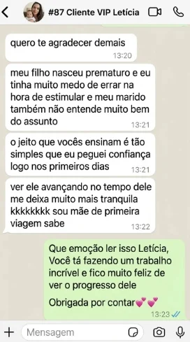
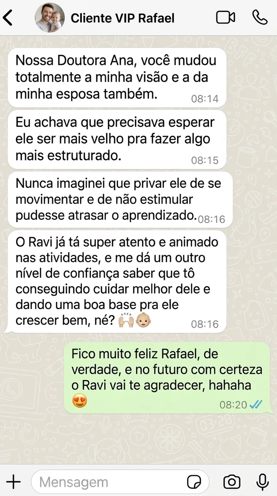
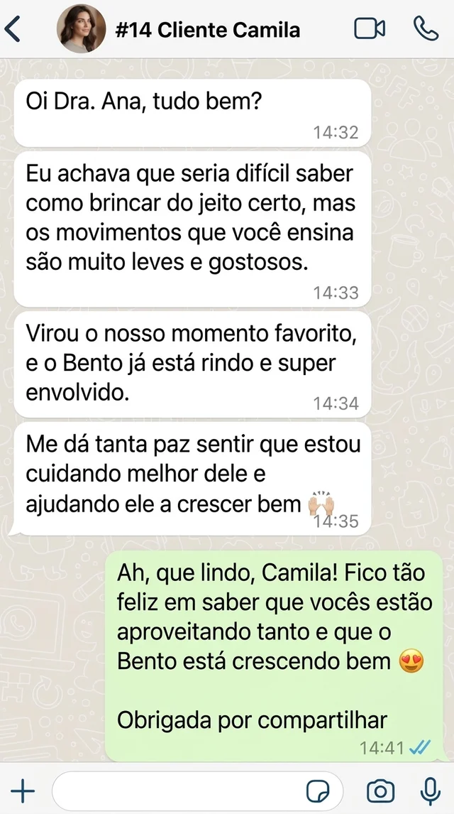

Seu bebê vai engatinhar e andar sozinho. Todo o resto depende de uma mãe disposta a fazer mais. Só 10 minutos por dia.
Role para entender por que isso importa tanto agora↓
Nos anos 1930, a pesquisadora Myrtle McGraw acompanhou dois gêmeos desde o nascimento: Johnny e Jimmy.1
Johnny recebeu treino de movimento desde os primeiros meses. Nadar, escalar, até patinar. Praticamente toda oportunidade de movimento que McGraw conseguiu criar para ele.
Jimmy não recebeu nada disso. Só o cuidado normal, sem nenhum treino a mais.
No fim do experimento, os dois engatinharam e andaram praticamente na mesma época.
Johnny atingiu os marcos no mesmo ritmo que Jimmy.
Mas Johnny era muito mais capaz.
Ainda bem pequeno, ele patinava, nadava sozinho e escalava rampas e estruturas que desafiariam crianças bem mais velhas.
Então os pesquisadores tentaram ensinar as mesmas habilidades ao Jimmy. E ele alcançou o irmão em várias delas. Parecia que o treino de bebê quase não tinha feito diferença.
Até que, anos depois, voltaram a acompanhar os dois, e a história mudou. Johnny continuava com mais coordenação, mais controle e mais confiança no próprio corpo. Jimmy aprendeu as habilidades, uma por uma. O que ele não conseguiu recuperar foi o que deixou de viver quando era bebê.
O movimento não fez Johnny atingir os marcos mais cedo.
O que ele fez foi construir a base para todo o resto: a coordenação, o controle do corpo e a confiança física que nenhuma tabela de marcos consegue medir.
A diferença não foi genética. Foi oportunidade.
1 McGraw, M. B. (1935). Growth: A Study of Johnny and Jimmy. Appleton-Century-Crofts.
Bebê Acrobata · acesso digital imediato
→Quero ajudar meu bebê agora🔒 Pagamento 100% seguro
O Bebê Acrobata foi desenvolvido com profissionais do desenvolvimento infantil. Depois, cada exercício foi revisado e aprovado pela Dra. Ana Helena e pelo Dr. Rodrigo Vinicius, terapeutas ocupacionais, para merecer a sua confiança.
Revisou o programa inteiro: os sinais de prontidão de cada fase, os pontos de parada e as progressões adequadas para cada idade. Garantiu que você saiba exatamente quando pausar e quando avançar uma rotina.
Testou a biblioteca de exercícios do começo ao fim. Conferiu cada aviso, cada limite de idade e cada ponto de progressão de todos os movimentos do programa.



arraste para o lado →
Mensagens reais enviadas à Dra. Ana Helena por pais que ela acompanha, reproduzidas com autorização. Cada experiência é única.
Chega de pesquisar "o que fazer com meu bebê hoje".
O Mapa do Movimento te dá a biblioteca completa de exercícios, organizada por idade e por fase. Abriu, escolheu, fez junto. Pronto.
Quer que a gente faça por você? O Método Bebê Acrobata entrega a rotina pronta de cada semana do primeiro ano, já montada para a fase do seu bebê, e 5 rotinas para os momentos difíceis.
Cada rotina combina com o momento em que seu bebê está agora e prepara para o que vem depois.
Você não precisa ser atlética. O problema nunca foi você. É fazer tudo sem mapa: um vídeo daqui, outro dali, sem saber se serve para a fase dele.
Quero ajudar meu bebê agora →Nos primeiros meses, o cérebro do seu bebê está em modo coleta. Cada chute, cada tentativa de alcançar, cada tentativa de rolar vira uma nova entrada. Pesquisadores que acompanharam bebês com sensores contaram milhares de movimentos de perna por dia nos primeiros meses.2 Só de perna.
Cada movimento é o cérebro catalogando o que esse corpo consegue fazer.
Seu bebê tenta de tudo. Chutar, alcançar, rolar, empurrar. O cérebro cria conexões para cada movimento que experimenta. Quanto mais variado, mais rico o catálogo.
Aos poucos, o cérebro passa de colecionar para refinar. Em vez de tentar tudo, o bebê começa a escolher e a fortalecer os padrões que funcionam. Qual engatinhar é mais eficiente? Qual alcance pega o brinquedo? O cérebro otimiza a partir do que juntou.
Lembra dos gêmeos? Então: a biblioteca do Johnny, o que recebeu todas as oportunidades de movimento, estava cheia de milhares de padrões.
A do Jimmy, o irmão que só teve o cuidado normal, não estava vazia, mas era mais fina. Os dois cérebros fizeram a mesma otimização. Só tinham bibliotecas diferentes para trabalhar.
O Bebê Acrobata enche essa biblioteca enquanto o cérebro do seu bebê está mais aberto a ela. 10 minutos de movimento variado e com propósito por dia, nos meses em que a coleta está no pico.
2 Adolph, K. E. e Berger, S. E. (2006). Motor development. Em Handbook of Child Psychology.
As duas opções dão acesso para sempre. A diferença é o quanto a gente faz por você.
Para quem tem tempo de montar a própria rotina sozinha
Para a mãe ocupada que quer saber exatamente o que fazer hoje
Quero o Método completo · R$ 47Garantia de 30 dias nas duas opções.Teste sem risco. Se não for para você, devolvemos tudo.
O Mapa te dá o caminho. O Método te leva pela mão.
O método que diz exatamente o que fazer todos os dias, montado para a fase do SEU bebê.
O guia que começou tudo: o sistema completo por escrito, os 6 degraus e a biblioteca com mais de 40 exercícios essenciais, com o passo a passo de cada um.
Avulso:52 rotinas, uma por semana, do nascimento ao primeiro aniversário. Abriu, viu o que fazer, fez junto. Pronto.
Avulso:Bruços sem choro, hora da cólica, antes de dormir, rotina do engatinhar e rotina dos primeiros passos.
Avulso:Por que engatinhar importa tanto, as fases do engatinhar e o que fazer quando parece que ele vai "pular" essa etapa.
Avulso:Cinco encontros que levam você do "tenho medo de machucar meu bebê" ao "sei exatamente o que estou fazendo". A parte do programa que, no fundo, é para você.
Avulso:51 vídeos de demonstração, organizados por fase: você vê o movimento antes de fazer.
Avulso:A Série Mãe Confiante em áudio e um áudio para cada fase, com o que esperar e o que fazer. Para ouvir enquanto amamenta ou embala.
Avulso:Um checklist por fase, a partir dos marcos da Caderneta da Criança. Você chega na consulta sabendo o que perguntar.
Avulso:O primeiro rolar, o primeiro "sentou sozinho", o primeiro passo. Com data, para guardar para sempre.
Avulso:Comprando cada item separado: R$ 232,10
O Bebê Acrobata ainda está crescendo. O sistema principal está pronto, e a videoteca com 51 vídeos já vem junto. Mas não vou parar: a rotina da semana direto no WhatsApp e uma comunidade de mães estão a caminho.
Quem entra agora como fundadora recebe tudo o que for lançado, para sempre, sem pagar a mais. Hoje, R$ 47. Quando o sistema estiver completo, o preço vai para R$ 97.
Você não paga menos porque leva menos. Paga menos porque chegou antes.
Faça assim.
Entre no Bebê Acrobata...
Abra a sua primeira rotina hoje...
Faça os movimentos com o seu bebê por 30 dias completos...
E, se você não sentir diferença (em você e no seu bebê)...
Então eu não quero o seu dinheiro.
Mande um e-mail para suportebebeacrobata@gmail.com. Uma linha basta. Reembolso total, sem formulário e sem burocracia.
Eu faço essa promessa porque confio no método. O que eu espero receber de você não é um pedido de reembolso. É o vídeo do seu bebê erguendo a cabeça pela primeira vez, atravessando a sala engatinhando, rindo no meio da rotina.
Então o único risco de verdade? Não começar.
Quero ajudar meu bebê agora →Se tudo isso só trocasse a ansiedade do "será que estou fazendo certo?" pela confiança de seguir um sistema com começo, meio e fim… valeria R$ 47?
Se só trocasse as pesquisas das 2 da manhã ("meu bebê está atrasado?", "por que ele não aceita ficar de bruços?") por respostas de verdade… valeria R$ 47?
Se só garantisse que você aproveitou os meses em que o cérebro do seu bebê está mais faminto por movimento, em vez de descobrir tudo isso daqui a seis meses e desejar ter começado antes… valeria R$ 47?
Se só ajudasse o seu bebê a construir um engatinhar forte, usando os dois lados do corpo por igual… valeria R$ 47?
Se só te desse a rotina pronta de cada semana, para você nunca mais se perguntar "o que eu faço hoje?"… valeria R$ 47?
Voltar para o bruços aleatório que faz o seu bebê gritar, continuar pegando exercício do Instagram e esperar para ver. A maioria dos bebês acaba chegando lá, e provavelmente vai ficar tudo bem. Mas você sempre vai se perguntar: e se eu tivesse dado mais? E se eu tivesse feito com mais intenção?
Seguir um sistema, ganhar a clareza e a confiança que estavam faltando e devolver ao seu bebê as oportunidades de movimento que a vida moderna tirou.
Em 5 minutos você abre a sua primeira rotina. Hoje à noite, faz com o seu bebê.
E daqui a 30 dias, imagine: ele no chão e, em vez de reclamar, alcançando, empurrando, rolando com vontade. Explorando, se divertindo, virando a criança curiosa e capaz que você sabe que ele pode ser.
E você? Não está mais ansiosa. Não está mais se perguntando se está certo. Está confiante, porque sabe exatamente o que está fazendo.
Essa é a mãe que você está prestes a se tornar.
O cérebro do seu bebê está construindo a biblioteca de movimentos agora. Foi para isso que o Bebê Acrobata foi criado. Acesso imediato ao sistema completo 👇
Com a Garantia Mãe e Bebê Confiantes. 30 dias, sem risco.
Cada exercício traz orientações de segurança, requisitos para avançar e o sinal claro de quando o seu bebê está pronto. Todos os exercícios foram revisados pelas terapeutas ocupacionais Dra. Ana Helena e Dr. Rodrigo Vinicius. Faça sempre com ele acordado e com você do lado, e pare se algo não parecer bem.
Não é sobre velocidade. A escada segue a ordem certa: força no tronco antes de sentar, engatinhar com os dois lados antes de ficar de pé. Marco não é troféu. O objetivo não é cedo. É forte.
Existe uma diferença entre o bebê que senta porque chegou a idade e o bebê que senta porque construiu força para sentar firme. O Bebê Acrobata é sobre o segundo.
Quase sempre, o bebê que odeia bruços ainda não tem força para essa posição. Por isso a gente não começa no chão: começa no seu peito, de lado e no colo. O chão vem depois, quando ele já tem força.
Não é para consertar problema. É como a alimentação: o bebê cresce com o básico, mas o que você oferece com intenção dá a ele mais material para trabalhar. O Bebê Acrobata soma com o pediatra, não substitui.
Converse antes com o especialista que acompanha vocês e mostre o guia para ele. Em prematuros, use a idade corrigida.
Do nascimento aos 18 meses, pela fase e não por uma idade fixa. A fase em que mais rende é dos 3 aos 10 meses.
Não. A janela vai até os 18 meses, e você começa no degrau em que ele está hoje. Começar entre os 5 e os 8 meses funciona muito bem.
10 minutos por dia, dentro do tempo de chão que você já passa com ele.
Consegue. A sua forma física não importa. O que importa é ter um sistema que diga exatamente o que fazer.
A primeira mudança costuma ser em você: a segurança de saber o que fazer. No bebê, cada um tem o seu ritmo, e o Diário das Conquistas ajuda você a enxergar cada avanço.
O Mapa é o caminho: o guia e a biblioteca completa, para você montar a sua rotina. O Método te leva pela mão: a rotina pronta de cada semana, as 5 rotinas dos momentos difíceis, o Guia do Engatinhar e a Série Mãe Confiante.
Vídeo solto não diz se o exercício é adequado para a fase do seu bebê, nem mostra os erros que você precisa evitar. Aqui tudo está na ordem certa, com o sinal de quando avançar.
Não. Pagamento único, e o acesso é seu para sempre.
Tem: 30 dias. Uma linha por e-mail e devolvemos 100%.